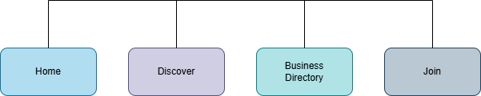

Site Name
São Paulo Chamber of Commerce
This name represents a centralized platform where businesses can connect and promote economic growth in São Paulo.
Optional domain: saopaulochamber.com
Site Purpose
The website provides both informational content and a functional business networking tool. Users can connect with other businesses, share resources, and collaborate to promote economic growth in São Paulo.
Target Audience
- Small and medium-sized business owners in São Paulo
- Entrepreneurs looking to start a business in São Paulo
- Investors interested in the São Paulo market
- Local government officials and economic development organizations
Site Goals
- Provide a platform for businesses to connect and collaborate
- Offer resources and information to support business growth
- Promote the economic development of São Paulo
User Personas
- Joana: A small business owner in São Paulo looking to connect with other businesses and find resources to grow her business.
- João: An entrepreneur planning to start a new business in São Paulo and seeking information on the local market and networking opportunities.
- Luciana: An investor interested in exploring opportunities in the São Paulo market and connecting with local businesses.
- Carlos: A government official focused on economic development, looking for ways to support local businesses and promote growth.
Scenarios
- A local business owner is interested in joining the chamber of commerce to network with other business owners. They visit the website to find information on membership benefits, fees, and how to apply.
- An entrepreneur is looking for resources to help them start a new business in São Paulo. They visit the website to access guides, templates, and connect with mentors.
- An investor is interested in exploring opportunities in the São Paulo market. They visit the
SEO Plan
- Use relevant keywords such as "São Paulo business networking," "São Paulo economic growth," and "São Paulo chamber of commerce" in page titles, headings, and content.
- Optimize meta descriptions for each page to improve click-through rates from search engine results.
- Ensure the website is mobile-friendly and has fast loading times to enhance user experience and search engine rankings.
- Build backlinks from reputable business and economic development websites to increase domain authority.
Design Brief
Primary (#1b3a6b): Headers
Secondary (#f5f2ec): Background
Accent (#e8d9a4): Highlights and badges
Text (#2c2c2a): Body copy
Segoe UI: Headings
Arial: Body text
Site Map

Wireframes
Mobile View
Header (Logo)
Navigation (Stacked)
Main Content (Intro + Info)
Tracker Preview
Footer
Desktop View
Header (Logo + Navigation)
Main Content
Sidebar / Tracker
Footer